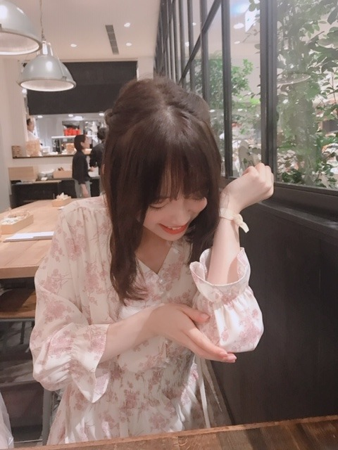

2019/0730Tue描きやすいペン

肘ぶつけて痛がってる私とそれを笑いながら写真をとる親友。
鬼や！
明日、私が第1話にゲスト出演させていただいたドラマ「遊戯みたいにいかない。」のBlu-ray&DVDが発売になります☺︎

メイキングなどもありますので是非！
私もお家で早速観ます☺︎ 楽しい撮影だったな〜
あ、
ホットギミック ガールミーツボーイの上映がのびました！！本当に、ありがとうございます。
メンバーやスタッフさん、友達からも毎日映画の感想をいただけていて、幸せです。
最近だと、新海誠監督「天気の子」を観に行ったのですが明るいだけではない青春映画って今年の夏のテーマなのかもと勝手に親近感を感じて観ていました。
すてきだったな〜
笑われるくらいの愛ならいらない...ですよね...
めちゃよかったです 陽菜ちゃんも芯のある感じが良くてほだかくんのまっすぐさにもギュンギュンしました
ほだかくんシンプルにお顔がタイプでした
みんなが傷を負って隠して曝け出して生きてるんだって
ホットギミックも"陽＂というよりは"陰"に着目された映画で、まっすぐな愛や人の心の傷、いろんなことを感じていただけると思います。
いま、この時代だからこそ、色んな方に観てほしいです


よろしくです
では！
2019/07/30 19:30
コメント(255)
未央奈ちゃん、ブログ更新ありがとうございます！
天気の子を観に行ったのですね！
僕は明後日の金曜日に観に行くので、とても楽しみです！！
ホットギミック、公開期間が延びて、更にたくさんの方が観に来てくださると思うので、嬉しいですね！！
でも、関西圏は新たに京都で始まりますが、大阪などは終わってしまいましたね…
僕ももう一回くらい行きたいのですが、現実的には少し厳しそうです…
本当に素晴らしい作品で、観れば観るほど面白いと思うので、2回だけでなく、もっと観に行きたかったです…
そういえば、工事中のホラー映画、面白かったです！
また、未央奈ちゃんが作った作品観てみたいです！！
乃木坂NGが出たと言っていましたが、元々考えていた、もっと刺激的な演出のものも、観てみたかったなと思いました！
もちろん、工事中で流すには良くないのでしょうけど、また別の場所とかで、そういうのを観れる機会があったら嬉しいななんて思いました笑
未央奈ちゃん、大好きです
天気の子を観に行ったのですね！
僕は明後日の金曜日に観に行くので、とても楽しみです！！
ホットギミック、公開期間が延びて、更にたくさんの方が観に来てくださると思うので、嬉しいですね！！
でも、関西圏は新たに京都で始まりますが、大阪などは終わってしまいましたね…
僕ももう一回くらい行きたいのですが、現実的には少し厳しそうです…
本当に素晴らしい作品で、観れば観るほど面白いと思うので、2回だけでなく、もっと観に行きたかったです…
そういえば、工事中のホラー映画、面白かったです！
また、未央奈ちゃんが作った作品観てみたいです！！
乃木坂NGが出たと言っていましたが、元々考えていた、もっと刺激的な演出のものも、観てみたかったなと思いました！
もちろん、工事中で流すには良くないのでしょうけど、また別の場所とかで、そういうのを観れる機会があったら嬉しいななんて思いました笑
未央奈ちゃん、大好きです
しっかり休養とってね


未央奈ちゃんブログ更新ありがとう☺体調には気をつけて頑張ってね！応援してます！
未央奈さん好きです。推しメンだから何時も忙しいのにブログ更新ありがとうございました。僕もアトピー皮膚炎なので未央奈さんのアレルギーはよく理解出来ます。沢山と友達いてうらやましい。謙虚な所が良いね。
ブログ更新ありがとう
今の髪型とても似合ってますよ＼(^-^)／
熱中症に気をつけてね


今の髪型とても似合ってますよ＼(^-^)／
熱中症に気をつけてね
みおなちゃん、こんにちは。
ホットギミック、公開期間が延びて、よかったですね。とても嬉しいことですね。
乃木坂工事中、僕は見たよ。録画して見ました。みおなちゃんの創作恐怖体験ドラマ、めっちゃ怖かったです。
みおなちゃん、肘をぶつけてしまったんですね。大丈夫ですか。痛いですよね。僕も肘をぶつけたことがあるので、よくわかります。
３枚目の写メのみおなちゃん、めっちゃかわいいです。
みおなちゃん、体調に気をつけて仕事頑張ってね。
またコメントするね。
ホットギミック、公開期間が延びて、よかったですね。とても嬉しいことですね。
乃木坂工事中、僕は見たよ。録画して見ました。みおなちゃんの創作恐怖体験ドラマ、めっちゃ怖かったです。
みおなちゃん、肘をぶつけてしまったんですね。大丈夫ですか。痛いですよね。僕も肘をぶつけたことがあるので、よくわかります。
３枚目の写メのみおなちゃん、めっちゃかわいいです。
みおなちゃん、体調に気をつけて仕事頑張ってね。
またコメントするね。
映画の上映延長よかったですね。
ひとりでも多くの人に見てもらえるとよいですね。
ひとりでも多くの人に見てもらえるとよいですね。
こんにちは
猛暑でもう正月になりそうですね～
肘ぶつけて、とっても痛そうやねー！
痛いの痛いの、飛んでけ～～ですよ♪
遊戯みたいにいかない、観たいです！
メイキングもとっても楽しみですよ☆
ホットギミックも大盛況ですねー！！
天気の子のテーマともリンクします◎
両主人公ともに真っ直ぐに生きてます！
笑われるくらいの愛なら要らないです♡
この時代だからこそ真っ直ぐで在りたい☺
猛暑でもう正月になりそうですね～
肘ぶつけて、とっても痛そうやねー！
痛いの痛いの、飛んでけ～～ですよ♪
遊戯みたいにいかない、観たいです！
メイキングもとっても楽しみですよ☆
ホットギミックも大盛況ですねー！！
天気の子のテーマともリンクします◎
両主人公ともに真っ直ぐに生きてます！
笑われるくらいの愛なら要らないです♡
この時代だからこそ真っ直ぐで在りたい☺
個別握手会行きます
チャァオ～～!☆彡
みおちゃん、こんにちは～～～⤴️⤴️❕❤️❤️❤️❤️❤️笑顔
もぉ～～～⤴️⤴️肘は大丈夫ぅ～～～⤴️⤴️❕❔❤️❤️❤️❤️❤️心配顔
まだ痛くなぁい❔❤️❤️❤️❤️❤️心配顔
おいらも、よく肘や膝をぶつけるよぉ～❕笑顔
肘をぶつけると、痛いよねぇ～～❕❤️❤️❤️❤️❤️笑顔
みおちゃん❕笑顔・・・
お友達は責めないでねぇ❕❤️❤️❤️❤️❤️笑顔
若い頃は、みんな元気だから笑うよ❕❤️❤️❤️❤️❤️笑顔
それでは、可愛いぃ～みおちゃん❕笑顔・・・
お大事にねぇ❕❤️❤️❤️❤️❤️笑顔
(でもゴメン❕・・・痛がる、みおちゃん写メめっちゃ綺麗可愛いです❕❤️❤️❤️❤️❤️笑顔)
☆大人しい、おすまし！より☆彡
まさか、オテンキのりさんの『肘～、曲がりま～ッス!!』を全力でやってぶつけたとか？(笑)。
天気の子、まだ観てないですが、評判良いですね。
予定立ててみようかなぁ☆
天気の子、まだ観てないですが、評判良いですね。
予定立ててみようかなぁ☆
未央奈ー更新有難う
嗚呼、可愛すぎて辛いです。
因みに僕のペンは書きやすいですが、描きやすくはないみたいです(笑)
嗚呼、可愛すぎて辛いです。
因みに僕のペンは書きやすいですが、描きやすくはないみたいです(笑)
「天気の子」見たんですね笑！最近映画全然見れてないので羨ましいです!!
未央奈さん、こんにちは！
肘打ち痛そ～う
遊戯みたいにいかない。
メイキングも楽しみです
ホットギミック
上映延長おめでとうございます！
もう一度観に行きます(^_^)
肘打ち痛そ～う
遊戯みたいにいかない。
メイキングも楽しみです
ホットギミック
上映延長おめでとうございます！
もう一度観に行きます(^_^)
未央奈、こんにちは❤️
遊戯みたいにいかない楽しみだね あの空気間良いよね素晴らしい映像が残ってるし
ホットギミック延長おめでとう確かに、面白いよね。
また直ぐに3回は観に行くよ❤️
またね
予定では10回は観るよ楽しみだね
ではでは❤️
遊戯みたいにいかない楽しみだね あの空気間良いよね素晴らしい映像が残ってるし
ホットギミック延長おめでとう確かに、面白いよね。
また直ぐに3回は観に行くよ❤️
またね
予定では10回は観るよ楽しみだね
ではでは❤️
ライブ行きたいよ～。
未央奈ちゃんに会いたいよ～。
行けなくても大好き
未央奈ちゃんに会いたいよ～。
行けなくても大好き
好き。
ホットギミックの出演者みんないい人でよかったね！
これからも推しま〜す！
頑張ってください！
これからも推しま〜す！
頑張ってください！
みおな

堀未央奈❤こんばんは 昨日ブログ送ったのに上がってないからまた送るね DVDいつ出るのかな？出たら買うからね 肘大丈夫？未央奈いつもと違うね(^o^)v可愛いね(*^_^*)大好きだよ愛してる ♥❤これからも頑張ってね(*^_^*)
こんばんはお疲れさま✨
肘は大丈夫なん？
痛そうや(笑)
(笑)ごめんね。
ホットギミック上映延長おめでとう✨
でもまだ見てなくごめんね。
天気の子も俺のまわりで話題になってるよ✨
青春映画に陰と陽は良くあるのではないかな？
甘い、甘酸っぱい、すれ違いなど様々かな？
個人的には、ずっと印象に残ってる、君に届け！かな？
好きな作品です。
漫画ならやはりタッチ。
野球人間ならみんな好きでは？✨
堀ちゃん、もっとお薦めありますか？
ではではまたね✨
体調気をつけてね✨
水分補給忘れずにね。
ほなね、堀ちゃん☺
頑張りや✨
肘は大丈夫なん？
痛そうや(笑)
(笑)ごめんね。
ホットギミック上映延長おめでとう✨
でもまだ見てなくごめんね。
天気の子も俺のまわりで話題になってるよ✨
青春映画に陰と陽は良くあるのではないかな？
甘い、甘酸っぱい、すれ違いなど様々かな？
個人的には、ずっと印象に残ってる、君に届け！かな？
好きな作品です。
漫画ならやはりタッチ。
野球人間ならみんな好きでは？✨
堀ちゃん、もっとお薦めありますか？
ではではまたね✨
体調気をつけてね✨
水分補給忘れずにね。
ほなね、堀ちゃん☺
頑張りや✨
可愛い♡
未央奈ブログ更新ありがとう〜！ホットギミック見に行くよ。
こんばんは。
夏休みを満喫しています。
友達とプールに行ったり、お祭りに行ったり
毎日、楽しく過ごしています。
でも、楽しくばかりないのが世の常で、
宿題という現実が藪の中からわいてきます。
自由研究、という宿題がありまして、
その名の通り自由に何かを研究してこい
というものです。
自由に研究って言ってもなぁ
自分の好きなこと...うーん
そうだ！
乃木坂46だ！
乃木坂の歴史、メンバーひとりひとりの個性
乃木坂工事中、ライブパフォーマンス、握手会
これなら大好きでいくらでも
研究出来そうです
乃木坂のファンで良かった〜
助かった〜
お母さんに止められました。
夏休みを満喫しています。
友達とプールに行ったり、お祭りに行ったり
毎日、楽しく過ごしています。
でも、楽しくばかりないのが世の常で、
宿題という現実が藪の中からわいてきます。
自由研究、という宿題がありまして、
その名の通り自由に何かを研究してこい
というものです。
自由に研究って言ってもなぁ
自分の好きなこと...うーん
そうだ！
乃木坂46だ！
乃木坂の歴史、メンバーひとりひとりの個性
乃木坂工事中、ライブパフォーマンス、握手会
これなら大好きでいくらでも
研究出来そうです
乃木坂のファンで良かった〜
助かった〜
お母さんに止められました。
ホットギミックの上映が少し延長し、
すっごく嬉しいよ。
また、観たいと改めて思ったよ。
あと、天気の子という映画も面白いから今ちょうど観たいなぁと思っていたんだ。
すっごく嬉しいよ。
また、観たいと改めて思ったよ。
あと、天気の子という映画も面白いから今ちょうど観たいなぁと思っていたんだ。
未央奈～ こんにちは
ブログ更新ありがとうございます。
この夏は映画と縁のある季節となりました。
まずは「ホットギミック」、高校生としての未央奈、いや初ちゃんにすっかり引き込まれていきました。
そして「いつの間にかここにいる」は、いい年をして熱いものがこみ上げてくる場面も‥‥。パンフレットもまたまたメンバーの持ち味が出ていたし‥‥。
「天気の子」は来月見に行く予定です。
大阪全握・ミニライブ行きます。昨年１０月の名古屋全握、あのとき撮っいてたのが「ホットギミック」だったんですね。その時の分も含めて、お話しできればと思いますので、体調万全にしておいてくださいね。
ということで、よろしくお願いします。
２４thの中に「路面電車の街」がありますが、楽しみにしています。岐阜のこと？ それとも都電荒川線？ MVも楽しみにしています。
ブログ更新ありがとうございます。
この夏は映画と縁のある季節となりました。
まずは「ホットギミック」、高校生としての未央奈、いや初ちゃんにすっかり引き込まれていきました。
そして「いつの間にかここにいる」は、いい年をして熱いものがこみ上げてくる場面も‥‥。パンフレットもまたまたメンバーの持ち味が出ていたし‥‥。
「天気の子」は来月見に行く予定です。
大阪全握・ミニライブ行きます。昨年１０月の名古屋全握、あのとき撮っいてたのが「ホットギミック」だったんですね。その時の分も含めて、お話しできればと思いますので、体調万全にしておいてくださいね。
ということで、よろしくお願いします。
２４thの中に「路面電車の街」がありますが、楽しみにしています。岐阜のこと？ それとも都電荒川線？ MVも楽しみにしています。
みおな☆
更新ありがとう！！
肘は大丈夫かい？？
お大事にね。。
8月は、ラジオやTVのほか、全握、全ツと忙しくなるけど、体調崩さないで頑張ってね～！！
9月1日、神宮全ツ行くよ～！！
更新ありがとう！！
肘は大丈夫かい？？
お大事にね。。
8月は、ラジオやTVのほか、全握、全ツと忙しくなるけど、体調崩さないで頑張ってね～！！
9月1日、神宮全ツ行くよ～！！
こんばんは！
毎度ブログ更新ありがとうございます！！
肘ぶつけたの？痛そう…肘って痛いよね
ホットギミック、公開期間が延びて、嬉しいね。更にたくさんの方が観に来てくれるのが喜ばしいですね
これから夏本番！
熱中症に気を付けてツアー頑張って下さい。
応援してます
毎度ブログ更新ありがとうございます！！
肘ぶつけたの？痛そう…肘って痛いよね
ホットギミック、公開期間が延びて、嬉しいね。更にたくさんの方が観に来てくれるのが喜ばしいですね
これから夏本番！
熱中症に気を付けてツアー頑張って下さい。
応援してます
みおなちゃん更新ありがとう╰(*´︶`*)╯♡
写真もありがと〜(*´꒳`*)
肘ぶつけたんだね(ﾟoﾟ;;
遊戯みたいにいかない。チェックするね〜(๑>◡<๑)
ホットギミックの上映が伸びたんだね(*ﾟ▽ﾟ*)
それだけ観てる方が多いということですね･:*+.\(( °ω° ))/.:+
天気の子は観に行こうと思ってまだ行けてない(´・∀・｀)
毎日凄い暑さだから熱中症に気を付けてね〜٩(๑❛ᴗ❛๑)۶
写真もありがと〜(*´꒳`*)
肘ぶつけたんだね(ﾟoﾟ;;
遊戯みたいにいかない。チェックするね〜(๑>◡<๑)
ホットギミックの上映が伸びたんだね(*ﾟ▽ﾟ*)
それだけ観てる方が多いということですね･:*+.\(( °ω° ))/.:+
天気の子は観に行こうと思ってまだ行けてない(´・∀・｀)
毎日凄い暑さだから熱中症に気を付けてね〜٩(๑❛ᴗ❛๑)۶
未央奈が参加する新曲カップリングのユニット曲
が楽しみです
タイトルから「あの教室」みたいなマイナー調な曲なのかなと勝手に想像してます
今日は無いだろうけど初OAはやっぱりレコメンかな❓
が楽しみです
タイトルから「あの教室」みたいなマイナー調な曲なのかなと勝手に想像してます
今日は無いだろうけど初OAはやっぱりレコメンかな❓
肘ぶつけて痛がってる顔がそんなに可愛いとは！！
癒しです☺️
癒しです☺️
ブログ更新ありがとう！
桃食べたい！
ホットギミック観に行きます。
暑い日が続きますが、体調には気を付けて行きましょう。
桃食べたい！
ホットギミック観に行きます。
暑い日が続きますが、体調には気を付けて行きましょう。
未央奈、個別握手行くよ❤️
堀ちゃん肘痛そー！
レコメン聞いたよ、堀ちゃんの元気な声聴けて私も眠気どっかいっちゃいました。
なぐさめてに 嫌です、うけたー。楽しかった。
新曲 路面電車の街 早く聴きたいです。
堀ちゃん夏は仕事いっぱいなんだね、
暑いけどガンバレー。
レコメン聞いたよ、堀ちゃんの元気な声聴けて私も眠気どっかいっちゃいました。
なぐさめてに 嫌です、うけたー。楽しかった。
新曲 路面電車の街 早く聴きたいです。
堀ちゃん夏は仕事いっぱいなんだね、
暑いけどガンバレー。
堀ちゃんこんばんは！
肘大丈夫ですか…？痛そう…( ´ 〜 ` )
でもごめんなさい、痛がってる堀ちゃんめちゃめちゃ可愛い…ちょっと変なテンションになるような感動するぐらい可愛い…(*´ー｀*)
髪型めちゃくちゃ似合ってます、その髪型はなんて呼んだらいいですか？( ´ ▽ ` )
〇〇の堀ちゃん可愛い！って全力で言いたいので笑
また一つ堀ちゃんの、全部好きな中でも特別好きな髪型が増えてしまいました、可愛すぎて特別がどんどん増えていきます笑
そしてお洋服もフワッとした感じで似合ってて可愛い…この1枚最高や…(*´ー｀*)
いつにも増してプリンセス感が強いです(o^^o)♩
親友さんに本当にありがとうございます！とお伝えください！笑
モデルさんのときや歌番組でのビシッと決めた堀ちゃんも素敵ですが、こういう日常のふとした瞬間も堀ちゃんは可愛いんだなぁと改めて(o^^o)
いつ何時でも堀ちゃんが好きだ〜( ´ ▽ ` )♩
また色んな写真見せてくれるとめっちゃ喜びます！(o^^o)
天気の子、堀ちゃんが話してるのを聞いて気になったので、ひとまず「グランドエスケープ」と「愛にできることはまだあるかい」をダウンロードして聴いています、堀ちゃんに影響されがち( ´ ▽ ` )
さてさて、日付変わってもう8月ですね！
めちゃくちゃ暑くて夏を感じられて嬉しいです(o^^o)♩
個人的には8月は大阪でのライブ、これが楽しみでたまりません( ´ ▽ ` )♩
夢のような時間が約束されているので、最初から最後まで全力で盛り上げ楽しめるよう、トレーニングしておきますp(^^)q
毎日お忙しいと思いますが、熱中症など気をつけてくださいね(^^)
堀ちゃんが毎日食べている梅干しは、ミネラルが豊富で熱中症予防に凄く効果的らしいですね、僕も見習ってライブ前に食べよ〜っと( ´ ▽ ` )
美味しいものを食べられる幸せな時間や、好きな人たちと過ごす楽しい時間を感じながら、堀ちゃんにとって楽しい時間に、楽しい夏になりますように(o^^o)
では！またコメントさせてくださいー！
肘大丈夫ですか…？痛そう…( ´ 〜 ` )
でもごめんなさい、痛がってる堀ちゃんめちゃめちゃ可愛い…ちょっと変なテンションになるような感動するぐらい可愛い…(*´ー｀*)
髪型めちゃくちゃ似合ってます、その髪型はなんて呼んだらいいですか？( ´ ▽ ` )
〇〇の堀ちゃん可愛い！って全力で言いたいので笑
また一つ堀ちゃんの、全部好きな中でも特別好きな髪型が増えてしまいました、可愛すぎて特別がどんどん増えていきます笑
そしてお洋服もフワッとした感じで似合ってて可愛い…この1枚最高や…(*´ー｀*)
いつにも増してプリンセス感が強いです(o^^o)♩
親友さんに本当にありがとうございます！とお伝えください！笑
モデルさんのときや歌番組でのビシッと決めた堀ちゃんも素敵ですが、こういう日常のふとした瞬間も堀ちゃんは可愛いんだなぁと改めて(o^^o)
いつ何時でも堀ちゃんが好きだ〜( ´ ▽ ` )♩
また色んな写真見せてくれるとめっちゃ喜びます！(o^^o)
天気の子、堀ちゃんが話してるのを聞いて気になったので、ひとまず「グランドエスケープ」と「愛にできることはまだあるかい」をダウンロードして聴いています、堀ちゃんに影響されがち( ´ ▽ ` )
さてさて、日付変わってもう8月ですね！
めちゃくちゃ暑くて夏を感じられて嬉しいです(o^^o)♩
個人的には8月は大阪でのライブ、これが楽しみでたまりません( ´ ▽ ` )♩
夢のような時間が約束されているので、最初から最後まで全力で盛り上げ楽しめるよう、トレーニングしておきますp(^^)q
毎日お忙しいと思いますが、熱中症など気をつけてくださいね(^^)
堀ちゃんが毎日食べている梅干しは、ミネラルが豊富で熱中症予防に凄く効果的らしいですね、僕も見習ってライブ前に食べよ〜っと( ´ ▽ ` )
美味しいものを食べられる幸せな時間や、好きな人たちと過ごす楽しい時間を感じながら、堀ちゃんにとって楽しい時間に、楽しい夏になりますように(o^^o)
では！またコメントさせてくださいー！
未央奈ちゃん、ひろっしーです！コメント投稿603回目です！
前回はブログ「いつから虫が怖くなったんだろう」にブログと「FNSうたの夏まつり」とモバメの感想を書きました！
時間→「No.417 2019年7月25日 02:23」
ブログ更新ありがとうございます！
「レコメン！」聴きながら書いています！
久々過ぎて何から書けば良いか・・・(謝)
ブログでもモバメでも書かれていましたが、桃美味いですよね！しかも毎朝って羨ましい～！
違うグループのモー娘。やIZ*ONEのメンバーとの交流もあり凄く感心しました！久し振りのオフを満喫出来て良かったですね！
未央奈ちゃんの地元には、りんご飴じゃなくていちご飴っていうのがあったんですね！さらに金魚すくいの特技があったとは！見たいな～！
オレンジのマスク、マスクしてても可愛いのが分かります！目も大きいし！髪色も綺麗だし！未央奈ちゃんはメイク術や服のブランドを結構書かれていて、優しくて親切だと思いました！
肘痛そう～！大丈夫？って、もう大丈夫か(笑)
ぶつけた瞬間を見事撮られましたね！
「乃木中」のホラードラマ結構怖かったです！
また堀監督の作品観たいな～！
ANNにて、24thシングルかっこよかったよ！
ここまで読んで頂きありがとうございました！
毎日お仕事お疲れ様です！体調にはくれぐれも気を付けて頑張ってくださいね！
おやすみおな～！
前回はブログ「いつから虫が怖くなったんだろう」にブログと「FNSうたの夏まつり」とモバメの感想を書きました！
時間→「No.417 2019年7月25日 02:23」
ブログ更新ありがとうございます！
「レコメン！」聴きながら書いています！
久々過ぎて何から書けば良いか・・・(謝)
ブログでもモバメでも書かれていましたが、桃美味いですよね！しかも毎朝って羨ましい～！
違うグループのモー娘。やIZ*ONEのメンバーとの交流もあり凄く感心しました！久し振りのオフを満喫出来て良かったですね！
未央奈ちゃんの地元には、りんご飴じゃなくていちご飴っていうのがあったんですね！さらに金魚すくいの特技があったとは！見たいな～！
オレンジのマスク、マスクしてても可愛いのが分かります！目も大きいし！髪色も綺麗だし！未央奈ちゃんはメイク術や服のブランドを結構書かれていて、優しくて親切だと思いました！
肘痛そう～！大丈夫？って、もう大丈夫か(笑)
ぶつけた瞬間を見事撮られましたね！
「乃木中」のホラードラマ結構怖かったです！
また堀監督の作品観たいな～！
ANNにて、24thシングルかっこよかったよ！
ここまで読んで頂きありがとうございました！
毎日お仕事お疲れ様です！体調にはくれぐれも気を付けて頑張ってくださいね！
おやすみおな～！
親友ちゃんは名カメラマン(笑)
堀ちゃん、大好きだよー
おはよう、未央奈ちゃん
これから全握、全ツと大阪続き
めちゃくちゃ楽しみです。
暑い日が続きますね。
くれぐれも身体には気をつけて下さい。
では。
これから全握、全ツと大阪続き
めちゃくちゃ楽しみです。
暑い日が続きますね。
くれぐれも身体には気をつけて下さい。
では。
私も天気の子みたいな
これからも応援してます
これからも応援してます
堀ちゃん、こんにちは。毎日お疲れ様です。8月24日の全国握手会に参加します。神宮ライブも行きたいです。
長文になりますが、読んでくれたら、嬉しいです。
今日は、一つ、ご報告したいことがあります。
僕は、先日、芸能オーデションをやってきました。結果、合格もらいました。9月からレッスンが、スタートします。最終的な目標は、歌手を目指してます。
僕は、坂道グループの皆さんの出会って、芸能界に興味が出てきました。皆さんは、永遠の憧れです。音楽の力を教えてくれました。皆さんのような人になりたいです。
一回しかない人生だし、せっかくのチャンスを無駄にしたくないので、頑張ります。僕は、いつまでも、皆さんのファンです。僕のことも、応援してくれたら嬉しいです。
他のメンバーにも伝えてくれたら、もっと嬉しいです。
諦めずに、頑張ります。
長文になりますが、読んでくれたら、嬉しいです。
今日は、一つ、ご報告したいことがあります。
僕は、先日、芸能オーデションをやってきました。結果、合格もらいました。9月からレッスンが、スタートします。最終的な目標は、歌手を目指してます。
僕は、坂道グループの皆さんの出会って、芸能界に興味が出てきました。皆さんは、永遠の憧れです。音楽の力を教えてくれました。皆さんのような人になりたいです。
一回しかない人生だし、せっかくのチャンスを無駄にしたくないので、頑張ります。僕は、いつまでも、皆さんのファンです。僕のことも、応援してくれたら嬉しいです。
他のメンバーにも伝えてくれたら、もっと嬉しいです。
諦めずに、頑張ります。
バブ未央奈可愛すぎる！
横浜個握お疲れ様でした！
1部ギリギリ駆け込んで、待っててくれてありがとう！
手繋いで出口まで送ってくれて、体感デート体験できました笑
好きすぎるはーと
横浜個握お疲れ様でした！
1部ギリギリ駆け込んで、待っててくれてありがとう！
手繋いで出口まで送ってくれて、体感デート体験できました笑
好きすぎるはーと
こんにちは
レコメン！面白かったですよー！！
みおちゃんの桃をひとつ私に下さいな～♪
みおちゃんは本当に桃太郎みたいですね☆
くすみブルーのセットアップ姿と髪型で、
爽やかな上に赤いルージュで釘付けです♡
一緒にお祭り行ったら、あたふたしそう！
まるで竜宮城にいる気分になりましたよ♡
次シングルのユニット曲も楽しみですし、
上海での動画もとっても楽しかったです♡
今とても暑いから体調管理して下さい～☺
レコメン！面白かったですよー！！
みおちゃんの桃をひとつ私に下さいな～♪
みおちゃんは本当に桃太郎みたいですね☆
くすみブルーのセットアップ姿と髪型で、
爽やかな上に赤いルージュで釘付けです♡
一緒にお祭り行ったら、あたふたしそう！
まるで竜宮城にいる気分になりましたよ♡
次シングルのユニット曲も楽しみですし、
上海での動画もとっても楽しかったです♡
今とても暑いから体調管理して下さい～☺
未央奈ちゃんブログありがとう！
肘ぶつけるとめっちゃ痛いよね！何かしびれる感じだよね(~_~;)
この夏は面白い映画いっぱいあるよね！トイ・ストーリーも見れてないし、天気の子も見たいしもう全部見たいですね！笑
全ツ大阪もうちょっとですね！多分めちゃ暑い日になると思うので、熱中症にならないように未央奈ちゃん気をつけてね！
肘ぶつけるとめっちゃ痛いよね！何かしびれる感じだよね(~_~;)
この夏は面白い映画いっぱいあるよね！トイ・ストーリーも見れてないし、天気の子も見たいしもう全部見たいですね！笑
全ツ大阪もうちょっとですね！多分めちゃ暑い日になると思うので、熱中症にならないように未央奈ちゃん気をつけてね！
未央奈さん☆‥！ こんにちは！ ホットギミック ガールミーツボーイ☆彡 連日大好評のようで、良かったですね♫ 映画は、今度DVD化されたら、買いますね☆彡
それからホラー映画！にもいつか出演出来たら、いいですね。 リングとかだったら、オファーが、いつか来ると思いますよ。 もちろん未央奈さん☆は、貞子じゃないですよ（笑）！ 未央奈さん☆！今度の乃木坂工事中のホラー企画！も頑張って下さいネ❤️❤️❤️❤️ （＾_＾）
それからホラー映画！にもいつか出演出来たら、いいですね。 リングとかだったら、オファーが、いつか来ると思いますよ。 もちろん未央奈さん☆は、貞子じゃないですよ（笑）！ 未央奈さん☆！今度の乃木坂工事中のホラー企画！も頑張って下さいネ❤️❤️❤️❤️ （＾_＾）
ブログ更新ありがとう！
肘ぶつけちゃった写真を見て可哀想よりも可愛いが勝っちゃうのが強すぎる…本当に可愛い(＞＜)♡
『遊戯みたいにいかない』サクラちゃん役すっごくハマっていて沢山笑ったな〜︎☺︎メイキングも気になる！
ホットギミック私の近所の映画館では上映が終わってしまったから、握手会で愛知に行く時に刈谷日劇でもう一度観ようかなって計画してる！
キラキラな世界が描かれた恋愛映画もいいけど、ホットギミックは登場人物の悩む姿に感情移入して、自分と重ね合わせて、一緒に苦しんで見終わった後に苦しみが昇華された感じがして、すごく新鮮だった。
上映が伸びたことで観る人が救われる人が増えたらいいなって思う︎☺︎
肘ぶつけちゃった写真を見て可哀想よりも可愛いが勝っちゃうのが強すぎる…本当に可愛い(＞＜)♡
『遊戯みたいにいかない』サクラちゃん役すっごくハマっていて沢山笑ったな〜︎☺︎メイキングも気になる！
ホットギミック私の近所の映画館では上映が終わってしまったから、握手会で愛知に行く時に刈谷日劇でもう一度観ようかなって計画してる！
キラキラな世界が描かれた恋愛映画もいいけど、ホットギミックは登場人物の悩む姿に感情移入して、自分と重ね合わせて、一緒に苦しんで見終わった後に苦しみが昇華された感じがして、すごく新鮮だった。
上映が伸びたことで観る人が救われる人が増えたらいいなって思う︎☺︎
こんばんは十波です。
堀未央奈さん、
体調は如何ですか？
アレルギー症状の方は大丈夫？
今日も幸福と笑顔、活力をありがとう！！！
応援してくれているファンや
支えてくれているスタッフ、メンバー、ご家族皆さん達と
ご自身の為にも頑張り！頑張って！！頑張る！！！
正々堂々！頑張ってくれていて！！本当にありがとうのありがとうね！！！
でも、
さすがは
清潔感溢れる
アイドルにして
女優の堀未央奈さん！！
肘をぶつけて
痛がっている姿も
『絵』になる！って、いうか
『様』になる！！って、いうか
『品』があって！！！育ちの良さを感じさせますよねー！！！（マジ！）
これはもう日頃から自分磨きに励まれている
堀未央奈さんだからこそ身につく『品格』という名のオーラ！！
その滲み出る『教養』は理想の自分に妥協しない清楚な堀未央奈さんの信念、精進の賜物です！！！
ねぇ、
『天気の子』を観られた堀未央奈さん！
明日はオテンキのりさんとのWパーソナリティ！！
私、聴くからね！！！（笑）
『レコメン！水曜日』楽しみに！！応援しているよーー！！！（大笑）
よろしくです！！！
・
・
・
あっ、
ぶつけた肘は痣になっていませんか？
心配しております。
跡が残らず
早く治りますように！！
祈り！願って！祈念しているからねー！！！
堀未央奈さん、
体調は如何ですか？
アレルギー症状の方は大丈夫？
今日も幸福と笑顔、活力をありがとう！！！
応援してくれているファンや
支えてくれているスタッフ、メンバー、ご家族皆さん達と
ご自身の為にも頑張り！頑張って！！頑張る！！！
正々堂々！頑張ってくれていて！！本当にありがとうのありがとうね！！！
でも、
さすがは
清潔感溢れる
アイドルにして
女優の堀未央奈さん！！
肘をぶつけて
痛がっている姿も
『絵』になる！って、いうか
『様』になる！！って、いうか
『品』があって！！！育ちの良さを感じさせますよねー！！！（マジ！）
これはもう日頃から自分磨きに励まれている
堀未央奈さんだからこそ身につく『品格』という名のオーラ！！
その滲み出る『教養』は理想の自分に妥協しない清楚な堀未央奈さんの信念、精進の賜物です！！！
ねぇ、
『天気の子』を観られた堀未央奈さん！
明日はオテンキのりさんとのWパーソナリティ！！
私、聴くからね！！！（笑）
『レコメン！水曜日』楽しみに！！応援しているよーー！！！（大笑）
よろしくです！！！
・
・
・
あっ、
ぶつけた肘は痣になっていませんか？
心配しております。
跡が残らず
早く治りますように！！
祈り！願って！祈念しているからねー！！！
ブログ更新ありがとう！！
自分は明日部活がオフなのでホックギミック見に行きます！
ようやく行けるということで興奮している状態ですw
これからもブログを楽しみにしてます！！
自分は明日部活がオフなのでホックギミック見に行きます！
ようやく行けるということで興奮している状態ですw
これからもブログを楽しみにしてます！！
こ、これは、可愛すぎてカメラ向けてしまうかも！！
痛かったよね
跡残ってない?
痛かったよね
跡残ってない?


堀絶対カワエエ！！！！！！！！！！！！！！！！！！！！！！！！！